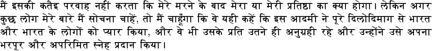
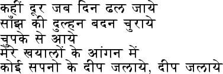
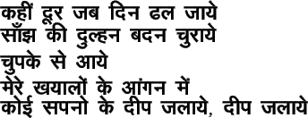
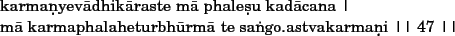
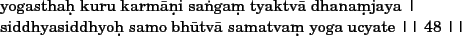
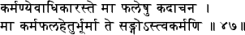
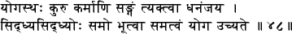

Example Text Input File for ITRANS
This is english text.
Following sentences are in hindi, using Frans Velthuis's Devanagari font:

Jawaharlal Nehru
Some more lines, using a larger font size:

Same lines, using the PostScript Devanagari font that is bundled with ITRANS:

Back to english.
Now some example text in romanized sanskrit and then in sanskrit.




2009-12-04
ITRANS Home Page: http://www.aczoom.com/itrans/